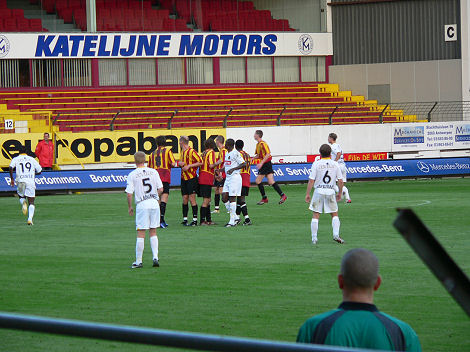

|
KV
Mechelen - Roda JC (0-0) 9 augustus 2006
|
De inkom voor deze wedstrijd was 5 euro. Netjes!
De wedstrijd begon iets later omdat de wedstrijdbal op het dak van het Chalet
lag.
Na een druilerige dag brak zowaar de zon door!
De gast met het mooie shirt is een Kerkraadse Brusselnaar die zowel wedstrijden
van Roda als van KVM bezoekt. Maar het blijft een mooi shirt!

Snel pils bestellen want tijdens de wedstrijd mag het hier ook al niet meer. De
warming-up zit er ondertussen op voor onze spelers.
Deze verstandige kerel heeft alvast een voorraadje ingeslagen.
De gezelligste tribune.
Leuke stokdoeken en ook vrij veel gezang.
Op de voorgrond Jean en Koffieboer, op de achtergrond de RW-crew.
In de eerste helft was er eigenlijk alleen dreiging vanuit enkele hoekschoppen
van
KV Mechelen. De Roda-defensie had daar totaal geen moeite mee.
O.a. Van Dessel, Pickée junior, Narinx, Kuijer en Hendriks op de
bestuurs-tribune.
Forse tackles van beide kanten leverden enkele blessures op (niet ernstig).
Captain Saeijs informeert hoe het met broeder Kah gaat.
Pas halverwege de tweede helft werd er volop gewisseld bij Roda. Lachambre,
Sonko en Bouchiba komen er in voor resp. Bodor, Van Tornhout en Agustien. Iets
later komt Voigt erin voor De Jong.

Beide ploegen hadden hun defensie zo goed op orde dat er slechts dreiging kwam
uit spelhervattingen. Een doodsaaie wedstrijd derhalve.
In de kantine was het als vanouds gezellig.
Deze stamgasten herkenden ons nog van een ver vervlogen bezoek. Tof!
© Koempels Pleasure Dome
|